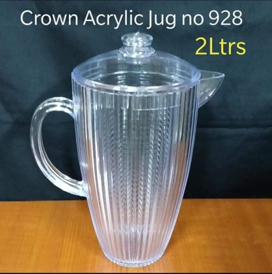
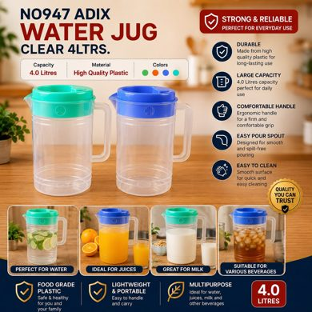
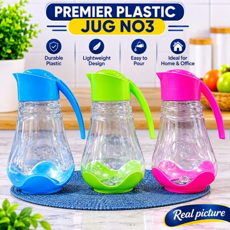
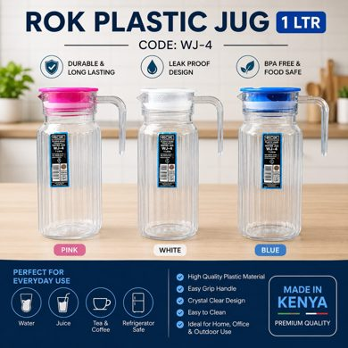
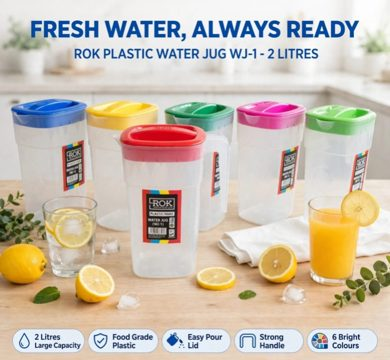
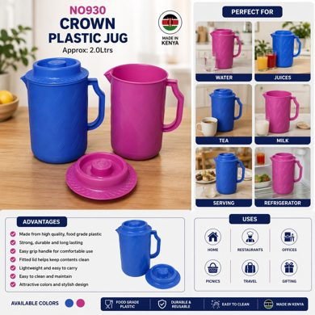

Shop › Water jugs
Water jugs in Kenya
Water jugs in Kenya: ribbed glass jugs, glass juice jugs and unbreakable acrylic and plastic fridge jugs with lids, 1L to 4L, delivered in Nairobi.
Open water jugs in the shopGlass jugs · Plastic & acrylic jugs
Glass jugs (2)
Plastic & acrylic jugs (8)

Crown acrylic jug No.928, 2LKES 690

Adix water jug No.947, 4LKES 550

Premier jug No.3KES 490

ROK WJ-4 fridge jug, 1LKES 490

ROK WJ-5 spiral jug, 1LKES 490

ROK WJ3 fridge jug, 1LKES 490

ROK WJ-1 square jug, 2LKES 390

Crown jug No.930, 2LKES 350